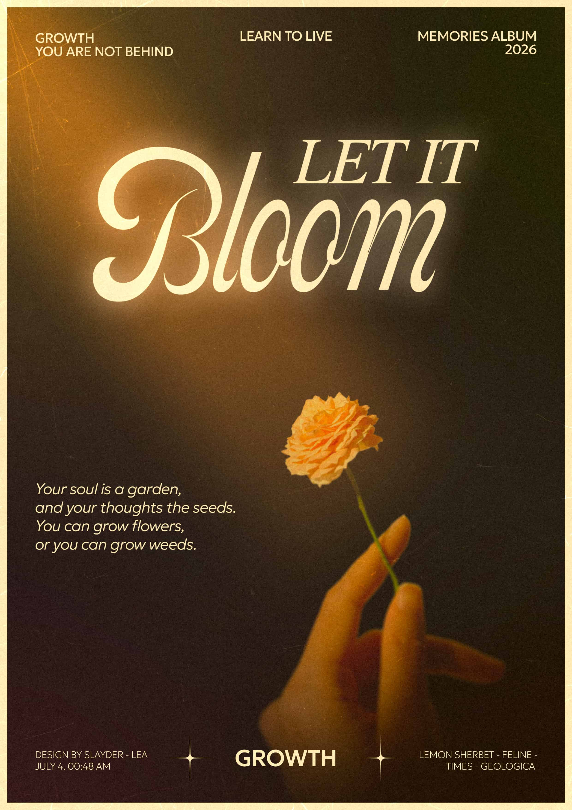

Bloom
Design - Photoshop

Projet Personel. Bloom est une affiche personnelle pensée comme une réflexion sur la manière de penser et de voir le monde, portée par une esthétique vintage, légèrement mystérieuse et presque féerique. Direction artistique & univers : le visuel associe une main tenant une fleur orangée lumineuse à des mentions telles que « Growth », « You are not behind », « Learn to live » et « Memories album 2026 », renforçant l'esprit carnet intime et introspection. Atmosphère & lumières : un fond sombre texturé et un halo chaud autour de la fleur créent un contraste doux et enveloppant qui souligne le côté mystérieux et délicat de l'affiche. Typographie & composition : la mise en page mêle un titre calligraphique marqué (« Let it Bloom ») à des blocs de texte sobres et alignés, structurant l'affiche avec équilibre et sensibilité.